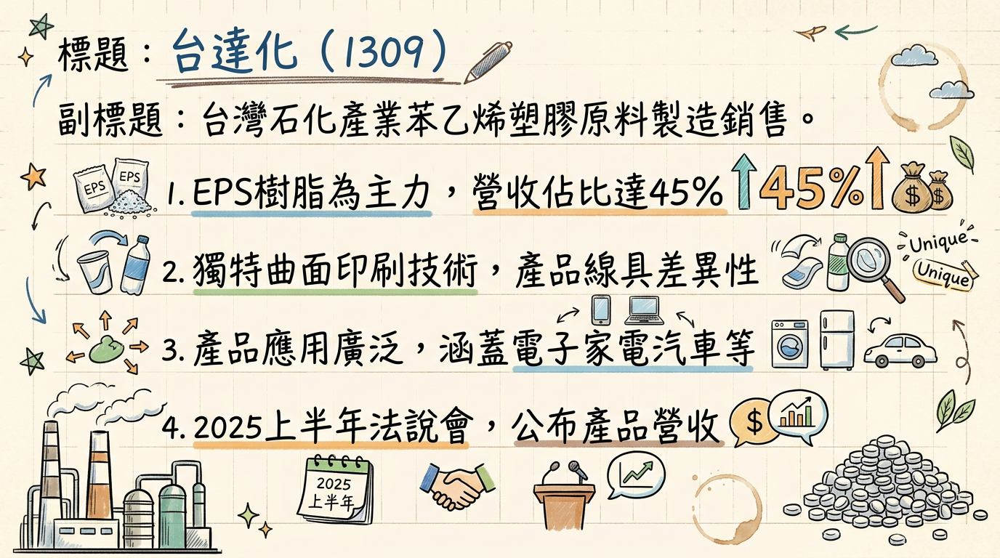
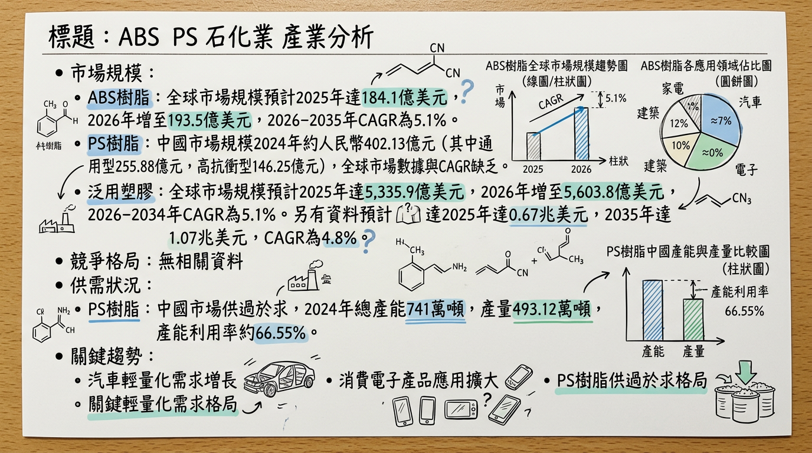
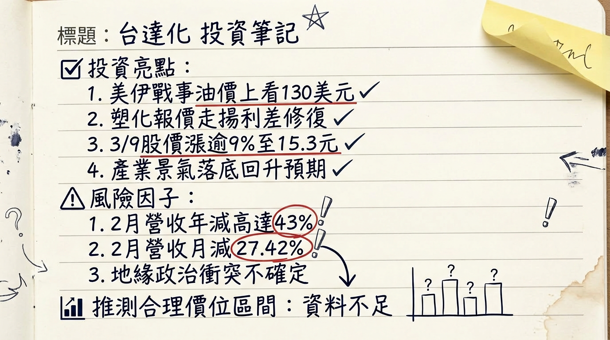

1309 台達化 深度研究報告
一句話摘要
台達化 (1309) 為苯乙烯系列塑膠原料製造商，2025年雖受石化景氣下行、中國產能過剩及匯損影響導致年度虧損，但公司積極開拓印度、東南亞等新興市場以分散風險，並受惠於國際油價與塑化報價回溫，市場預期2026年石化景氣將轉折向上，配合公司在GPPS高價值產品上的優勢，成長動能將聚焦於市場多元化與產品結構優化。
公司概覽
台達化學工業股份有限公司（1309）隸屬於臺聚集團，主要從事苯乙烯系列塑膠原料的製造與銷售，為台灣石化產業的重要參與者。
業務與產品線：
- ABS樹脂 (Acrylonitrile Butadiene Styrene copolymer)：高耐衝擊、耐熱、加工性佳，應用於汽車內飾、電子產品外殼、家電機殼、醫療設備等。
- PS樹脂 (Polystyrene)：
* 通用級聚苯乙烯 (GPS)：應用於日常生活用品、一次性餐具。
* 耐衝擊型聚苯乙烯 (HIPS)：具高抗衝擊性。
- EPS樹脂 (Expandable Polystyrene)：應用於保溫、包裝材料，如家電及水果包裝。
- SAN樹脂 (Styrene Acrylonitrile copolymer)：應用於家電外殼、汽機車零組件、日常用品及透明水壺。
- 玻璃棉 (Glass Wool)：應用於隔音建材。
- 其他：曲面印刷等獨特產品線。
營收結構 (2025年上半年)：
| 產品 | 營收佔比 | 營收金額 (新台幣億元) |
|---|
| EPS (中山及台灣合計) | 45% | 36.04 |
| ABS | 29% | 23.69 |
| GPS | 23% | 18.24 |
| 玻璃棉 | 3% | 2.85 |
- 台灣：頭份廠（玻璃棉）、林園廠（ABS/SAN）、前鎮廠（EPS、GPS/IPS）。
- 中國大陸：中山廠（EPS）。(天津廠已於2019年停止生產)。
- 目前無公開資料提供各製造基地單獨的營收貢獻比例。
所屬細分產業與相關題材 (2024年以後)：
- 細分產業：塑膠工業、苯乙烯系塑膠原料製造，為台灣第三大PS廠。
- 相關題材：
*
石化景氣循環與油價聯動：產品報價高度受國際油價及石化景氣循環影響，預期2026年塑化產業景氣可能回溫。
* 市場多元化與新市場拓展：積極拓展印度、東南亞、巴基斯坦、孟加拉、非洲、中南美洲等市場。2025年前四月，ABS和GPS產品在非中國/香港市場的佔比已分別提升至90%和94%。
* 環保與新能源材料：投入環保材料（如PIR回收料）研發與應用。
* 電動車產業需求：高性能工程塑料與輕量化材料需求增長，間接推動石化產業發展。
* 集團轉型：受惠於臺聚集團的轉型策略。
* 庫存與評價：在營收偏弱背景下，具低基期補庫存與避險潛力。
核心競爭優勢
市場多元化策略顯著：為應對中國大陸產能過剩及低價競爭，公司積極開拓新興市場，2025年前四月ABS及GPS產品在非中國/香港市場的銷售佔比分別達到90%和94%，有效分散區域性風險。
高品質產品具競爭力：GPPS產品因殘留單體低，在食品級應用上具備品質優勢及較佳的價差空間，為公司帶來穩定的獲利貢獻。
產品應用廣泛，受益產業趨勢：產品線涵蓋ABS、PS、EPS、SAN等，廣泛應用於汽車、電子、家電、建築等領域，能間接受益於電動車產業的輕量化與高性能材料需求。
集團資源挹注：隸屬於臺聚集團，有望受惠於集團的轉型策略與資源整合。
成本控制與產能效率：公司維持「全產全銷」的營運模式，以最大化產能利用率來降低單位生產成本，提升市場競爭力。
財務分析
月營收趨勢 (單位：新台幣千元)
| 月份 | 營收 (千元) | 月增率 (MoM) | 年增率 (YoY) |
|---|
| 2026/02 | 824,009 | -27.41% | -43.00% |
| 2026/01 | 1,135,298 | +8.92% | -11.65% |
| 2025/12 | 1,042,274 | +14.63% | -33.03% |
| 2025/11 | 909,181 | -14.15% | -45.35% |
| 2025/10 | 1,059,100 | -8.56% | -28.60% |
| 2025/09 | 1,158,361 | +7.35% | -30.99% |
季度數據與年度趨勢
* 合併營業收入：
14,485,681 千元
* 營業毛利：592,053 千元
* 營業利益（損失）：(423,675) 千元
* 歸屬於母公司業主淨利（損失）：(427,371) 千元
* 基本每股盈餘（損失）：(1.07) 元
* 銷貨收入：
80.82 億元 (年減
6.5%)
* 銷貨毛利：3.67 億元
* 毛利率：5% (去年同期 3%)
* 營業淨損：-1.69 億元
* 稅後淨損：-2.97 億元
* 每股虧損：-0.75 元
* 每股盈餘 (EPS)：-
0.18 元 (較上一季減少
70%，較去年同期減少
28%)
* 每股盈餘 (EPS)：-
0.93 元 (較去年同期增加
55%，意指虧損幅度較去年同期收斂)
- 2024年實際 EPS：-0.56 元。
- 2024年全年營收：未找到確切數據。
- 2026年預估營收與 EPS：未找到 2026 年的預估數據。
法說會重點
⚠️注意：以下為2025年11月及8月舉辦的法說會資料，已逾6個月，部分資訊可能已過時。
- 最近一次法說會日期：2025年11月25日 (2025年8月26日亦有舉辦)
- 2025年上半年營運狀況：
* 合併營收新台幣
80.8億元，較去年同期減少
6.5%。
* 稅後淨損擴大至新台幣2.97億元，每股虧損0.75元。
* 主要受美國關稅不確定性、匯率波動、中國大陸產能嚴重外溢及低價競爭影響。
- 市場開拓策略：積極開發印度、東南亞、非洲等中國大陸以外市場。
- 2025年下半年展望：管理層預期市場挑戰依然嚴峻，第三、四季營運可能與上半年相似。潛在正面因素包括美國聯準會可能的降息及中國大陸「反內捲」政策的落實力道。
- 產品線說明 (2025上半年營收佔比)：EPS (中山及台灣合計) 45% (營收36.04億元)；ABS 29% (營收23.69億元)；GPS 23% (營收18.24億元)；玻璃棉 3% (營收2.85億元)。
- 具體出貨量/訂單能見度、產能利用率、資本支出金額：未找到2025-2026年最新具體說明。
券商觀點
目前未找到2025-2026年關於台達化（1309）的券商目標價、EPS預估數字及近期重大評等調升/調降的最新資料。
券商目標價 (目前無最新券商報告資訊)
財報深度分析
利潤率趨勢
季度獲利能力趨勢 (毛利率、營業利益率、稅後淨利率)
| 期間 | 毛利率 | 營業利益率 | 稅後淨利率 |
|---|
| 2025年第三季 | 3.72% | -3.92% | -2.16% |
| 2025年上半年 | 5% | (未提供) | (未提供) |
| 2025年前三季累計 | 4.3% | (未提供) | (未提供) |
- 2025年第三季：-0.18 元
- 2025年第二季：-0.61 元
- 2025年第一季：-0.14 元
- 2024年第四季：+0.04 元 (由虧轉盈)
- 2024年第三季：-0.25 元
- 2024年第二季：-0.10 元
- 2024年第一季：-0.26 元
利潤率變化的原因分析：
- 2025年上半年：營運面臨美國關稅不確定性、匯率波動、中國大陸產能嚴重外溢及低價競爭等多重挑戰。儘管銷貨毛利率從2024年上半年的3%提升至2025年上半年的5%，但因2025年第二季新台幣走升產生鉅額匯兌損失，使稅後淨損擴大至新台幣2.97億元。
- 2025年前三季：終端需求疲弱及市場競爭加劇導致營運持續承壓。營業費用因去年基期較高而下降，且受惠於GPPS及玻璃棉業務獲利，使營業淨損較去年同期收斂。然而，業外支出的新台幣1.86億元（主要為匯兌損失）再次擴大稅後淨損，累計每股虧損達0.93元。
- 產品線表現差異：
*
ABS：2025年前三季銷量與去年同期持平。但2025年第四季起，印度撤銷BIS認證預計將引發中國大陸低價產品湧入，對價格與銷量造成衝擊，公司認為這是短期現象。
* GPPS：表現相對穩健，2025年第三季實現獲利，因其優良品質在食品級應用具競爭優勢。
* EPS：台灣廠銷量受美國對家電產品課徵關稅影響年減5%。中國大陸中山廠則因市場內捲嚴重及2025年第三季雲南極端氣候影響物流，銷量年減達46%。
* 玻璃棉：銷售量維持穩定，持續貢獻獲利。
存貨與營運
存貨週轉天數趨勢 (天)
| 期間 | 天數 |
|---|
| 2025年第三季 | 24.65 |
| 2025年第二季 | 23.94 |
| 2025年第一季 | 25.44 |
| 2024年第四季 | 24.53 |
| 2024年第三季 | 22.92 |
| 2024年第二季 | 21.16 |
| 2024年第一季 | 25.45 |
| 期間 | 天數 |
|---|
| 2025年第三季 | 47.90 |
| 2025年第二季 | 47.37 |
| 2025年第一季 | 44.88 |
| 2024年第四季 | 42.35 |
| 2024年第三季 | 35.37 |
| 2024年第二季 | 32.31 |
| 2024年第一季 | 39.75 |
- 存貨是否有異常堆積或備料現象：存貨週轉天數在2024年至今維持在21-25天的相對穩定區間，未見明顯異常堆積現象。
- 應收帳款週轉天數增加：截至2025年上半年底，平均收現日數為53天，較2024年底的42天有所增加。這主要受到中國大陸市場競爭激烈，下游廠商付款週期拉長所影響。
資本支出與產能
- 資本支出金額與計畫、折舊攤銷趨勢：目前未找到2024-2026年最新的具體資本支出資料及未來計畫。公司營運策略強調「維持全產全銷的營運模式，最大化產能利用率以降低單位生產成本」，顯示其現階段更著重於既有產能的優化利用。
股權異動
董監事/大股東申報轉讓、庫藏股、可轉債、增減資
- 董監事/大股東申報轉讓紀錄：未找到2024-2026年最新資料。
- 庫藏股買回紀錄：未找到2024-2026年最新資料。
- 發行可轉換公司債 (CB)：未找到2024-2026年最新資料。
- 現金增資或減資計畫：未找到2024-2026年最新資料。
股利政策
- 2025年：發放現金股利0.2元。除息交易日2025/07/24，發放日2025/08/21。
- 2024年：發放現金股利0.3元。除息交易日2024/07/25，發放日2024/08/23。
- 2023年：發放現金股利0.5元。除息日2023/07/27，發放日2023/08/25。
其他財報重點
- 負債比率與流動比率：截至2025年上半年底，負債佔資產比率為36%，與2024年底持平。流動比率為190%，顯示財務結構穩健。
- 淨負債/EBITDA、自由現金流量趨勢：未找到2024-2026年最新資料。
- 業外收支：2025年上半年業外支出高達1.86億元，主因是2025年第二季台幣走升產生鉅額匯兌損失。
產業分析
市場規模與年複合成長率 (CAGR)
- ABS樹脂：全球市場規模預計2025年達184.1億美元，2026年增至193.5億美元。2026-2035年複合年成長率（CAGR）為5.1%，主要受汽車輕量化、消費電子及建築應用驅動。
- PS樹脂：中國聚苯乙烯市場規模2024年約為人民幣402.13億元，其中GPS約人民幣255.88億元，HIPS約人民幣146.25億元。目前缺乏2025-2026年全球PS樹脂市場規模（美元計價）及CAGR的最新資料。
- 泛用塑膠：全球市場規模2025年達5,335.9億美元，預計2026年將成長至5,603.8億美元，2026-2034年CAGR為5.1%。另有資料顯示，全球塑膠產業市場規模2025年達0.67兆美元，預計到2035年增至1.07兆美元，CAGR為4.8%。
供需狀況
- PS樹脂：中國PS產業已從供不應求轉向供過於求。2024年中國產量約493.12萬噸，總產能達741萬噸，產能利用率約在70%。GPS和HIPS 2024年開工率分別為66.91%和65.81%。
- ABS樹脂：全球ABS市場預計2025年將穩步增長。2025年5月中國ABS出口量約3.2萬噸（年增83.91%），進口量7.34萬噸（年減20.22%）。
- 苯乙烯單體 (SM)：作為ABS和PS原料，預計在中國「十五五」期間（2026-2030年），供應量可能顯著下降，有助於改善供需結構。
產業的平均毛利率水準
目前未找到2025-2026年ABS和PS產業明確的全球平均毛利率水準數據。
競爭格局
全球ABS市場領先企業：
LG Chem、Formosa（台塑）、INEOS Styrolution、SABIC、Toray。未找到2025-2026年具體市佔率資料。
台達化 vs 主要競爭對手比較
| 項目 | 台達化 (1309) | 台化 (1326) | 國喬 (1312) | 台苯 (1310) |
|---|
| 主要產品 | ABS, PS (GPS/HIPS), EPS, SAN, 玻璃棉 | PS, ABS, 化纖、塑膠、石化、紡織 | ABS, SM (苯乙烯), PP | SM (苯乙烯), PS, 熱可塑性橡膠 |
| 2026年2月營收 | 8.24億元 (年減43%) | (未提供) | (未提供) | (未提供) |
| 2026年1月營收 | 11.35億元 (年減11.65%) | 250.4億元 (年增4.3% vs 2025/1) | (未提供) | (未提供) |
| 策略/產能 | 市場多元化 (印度、東南亞、非洲、南美), GPPS食品級優勢, 全產全銷 | 擴大內銷客戶, 開拓印度、韓國、東南亞市場, PS集中麥寮, ABS集中新港生產 | 受惠ABS、PS報價上漲, 營運添利 | (同業中多數為SM供應商，營運連動性高) |
| 技術/客戶/價格 | 未提供具體比較資料 | 未提供具體比較資料 | 未提供具體比較資料 | 未提供具體比較資料 |
| 毛利率/EPS | 2025年全年EPS: -1.07元, 2025H1毛利率5% | 未提供完整同業比較數據 | 未提供完整同業比較數據 | 未提供完整同業比較數據 |
產業趨勢
永續性與循環經濟：塑膠產業加速向循環經濟轉型。歐盟預計2026年推出「循環經濟法案」，推動再生材料整合與閉環系統。台達化已投入環保材料（PIR回收料）研發。
AI導入與智慧工廠：AI技術應用於塑膠射出工廠的智慧監控，自動偵測異常並調整設定，提升製造效率及產品一致性。台達化可藉此提升生產效率。
高性能與特殊材料需求：輕量化複合材料、阻燃聚合物、熱塑性彈性體等需求增長，特別在電動車、電子、新能源等領域。台達化的ABS、SAN等產品可望在此趨勢中找到高價值應用。
對台達化的具體機會與威脅
*
轉型升級：導入AI優化生產流程，提升效率與產品品質，降低成本。
* 永續發展：開發與應用再生材料（如再生ABS）和低碳製程，符合ESG趨勢，開拓綠色市場。
* 高價值應用：將產品線導向車用與醫療等高成長、高附加價值領域。
*
原料價格波動：苯乙烯、丁二烯等上游原料價格波動直接影響生產成本和毛利率。
* 市場競爭：中國大陸產能過剩、低價競爭，尤其在PS市場。
* 法規壓力：全球環保法規趨嚴，可能增加合規成本。
* 產品認證變動：印度撤銷ABS產品BIS認證，導致中國低價產品湧入，短期衝擊價格與銷量。
相關投資題材的具體連結
- 電動車 (EV)：電動車對輕量化、高性能塑膠材料需求增長，台達化的ABS、SAN等產品可應用於汽車內飾、電子外殼，間接受益。
- AI：AI改造生產流程並帶動高科技電子產品對高性能塑膠的需求，台達化產品可作為相關電子設備外殼、零組件材料。
- HBM (高頻寬記憶體)：HBM相關電子產品對高階、耐熱、高精度塑膠材料需求增加，如SAN樹脂在電子產品外殼的應用。
近期催化劑
利多事件
- 2026年03月09日：股價上漲逾9%至15.3元，受國際油價偏強帶動塑化報價走揚，市場預期利差修復。
- 2026年03月06日：股價亮燈漲停至13.95元，因塑化、樹脂報價走揚及市場對石化景氣落底回升的預期。
- 2026年03月02日：美伊戰事推升國際油價，中下游塑化產業（含台達化）可望迎來漲價利益與獲利動能。
- 2026年01月26日：股價盤中強漲7.6%，法人預期2026年塑化產業景氣將轉折向上，加上臺聚集團轉型題材發酵。
利空事件
- 2026年03月07日：公告2026年2月營收為新台幣8.24億元，月減27.42%、年減43%，創歷史新低。
- 2026年02月09日：公告2026年1月營收年減11.65%。
- 2025年12月04日 (法說會備忘錄)：公司指出2025年下半年市場挑戰嚴峻，且2025年第四季將面臨印度撤銷ABS產品BIS認證帶來的中國大陸低價產品競爭衝擊。
外資/投信近期買賣超張數 (截至2026年03月09日)
| 期間 | 項目 | 買賣超張數 |
|---|
| 近5日累計 | 三大法人 | -1,875 |
| 近5日累計 | 外資 | -1,909 |
| 近5日累計 | 投信 | 0 |
| 近5日累計 | 自營商 | +34 |
| 近20日累計 | 外資 | +905 |
| 近20日累計 | 投信 | 0 |
| 近20日累計 | 自營商 | +38 |
⭐ 成長動能時間軸
*
新市場拓展：GPS的非中國大陸/香港市場銷售佔比從2023年的
87%提升至
94%，主力市場為非洲、東南亞、中南美。ABS的非中國大陸/香港市場銷售佔比已達
90%。
*
持續市場多元化：公司持續積極開發印度、東南亞、非洲、巴基斯坦、孟加拉等中國大陸以外市場。
*
GPPS產品優勢：因其品質優良（殘留單體低）在食品級應用上具備競爭優勢與較佳價差，對2026年展望相對樂觀。
*
石化景氣轉折：法人預期塑化產業景氣將轉折向上，有助於公司營運改善。
* 產品需求改善：ABS、GPS等產品受惠於中國反內卷政策、油價走弱及原料供需改善。
* 新市場持續開發：公司將持續開發南美洲等新市場，並動態調整銷售區域，將部分產能轉向價差較佳的中國大陸市場。
- 長期展望 (中國「十五五」期間，約2026-2030年)：
*
原料供需改善：苯乙烯（SM）供應量可能顯著下降，有助於改善其供需結構，進而穩定ABS/PS的成本端。
- 擴廠計畫/新產能：目前未找到2025-2026年具體的新擴廠計畫或新產能上線時程。公司維持「全產全銷」策略。
2026 展望
成長動能：
- 產業景氣復甦：市場普遍預期2026年塑化產業景氣將轉折向上，終端需求有望逐步回溫，帶動產品報價及利差改善。
- 市場多元化效益顯現：公司持續深耕印度、東南亞、非洲、中南美洲等新興市場，ABS和GPS在非中國/香港市場的銷售佔比已達90%以上，有效降低對單一市場的依賴，並有助於規避中國大陸的產能過剩風險。
- 高價值產品線支撐：GPPS產品因其食品級應用優勢和較佳價差，預期將持續為公司貢獻獲利，優化整體產品組合。
- 集團轉型與資源整合：作為臺聚集團成員，有望受惠於集團的整體轉型策略與資源整合效益。
- 原料成本結構改善：長期而言，若苯乙烯等上游原料的供需結構在「十五五」期間改善，將有助於穩定台達化的生產成本。
風險：
- 中國市場不確定性：中國大陸產能過剩、低價競爭的「內捲」現象仍是主要威脅，可能影響產品毛利，尤其對EPS產品衝擊較大。
- 印度BIS認證影響：2025年第四季起印度撤銷ABS產品BIS認證，預計將引發中國大陸低價產品湧入，短期內對ABS的價格與銷量造成衝擊，儘管公司認為是短期現象，其影響程度仍需觀察。
- 國際油價與匯率波動：塑化產品報價與獲利高度受國際油價（如SM）及主要貨幣匯率波動影響，業外可能產生巨額匯兌損益。
- 全球經濟成長放緩：若全球經濟成長不如預期，將抑制終端需求，影響石化產品的銷售量與價格。
- 環保法規趨嚴：日益嚴格的全球環保法規可能增加生產成本或限制部分產品應用。
- 缺乏具體量化目標：管理層或法人目前未提供2026年具體的營收或EPS預估，增添未來展望的不確定性。
投資結論
台達化在2025年面臨嚴峻的營運挑戰，主要受到全球石化景氣下行、中國大陸產能過剩導致的低價競爭以及業外匯兌損失的影響，導致全年每股虧損1.07元。然而，展望2026年，在產業景氣有望觸底回升的背景下，公司已展現積極的策略調整與轉型動能：
景氣循環反轉與油價連動潛力：隨著法人普遍預期2026年塑化產業景氣將轉折向上，加上國際油價因地緣政治風險偏強，帶動塑化報價走揚，台達化有望受惠於利差修復，營運將從2025年的谷底逐步復甦。
市場多元化策略成效顯著：公司成功將ABS及GPS在非中國/香港市場的銷售佔比提升至90%以上（截至2025年前四月），有效降低中國市場「內捲」的負面影響，並積極開發印度、東南亞、非洲、南美等新興高成長市場，為長期營收增長奠定基礎。
產品組合優化與高價值應用：GPPS在食品級應用領域的品質優勢，使其能維持較好的價差與獲利能力，支撐公司整體毛利。此外，對環保材料的投入及產品在電動車、電子等高科技領域的間接應用，將有助於提升產品附加價值。
挑戰與風險並存，需持續關注：雖然2026年展望相對樂觀，但中國大陸產能過剩、印度ABS認證變動帶來的短期價格衝擊、以及國際油價與匯率的劇烈波動仍是潛在風險，可能影響獲利穩定性。
綜合考量，儘管台達化2025年財報表現不佳，但其積極的市場轉型策略、產業景氣回溫的預期，以及部分產品的競爭優勢，使其成為一個具備反轉潛力的標的。
投資建議：鑑於2025年基期較低且2026年產業有望復甦，建議投資人可將台達化視為景氣循環反轉與轉型成長的潛在標的。考量其轉型成果尚待完全顯現且仍存在部分不確定性，建議採中性偏多策略。
目標價區間建議：新台幣
16.5元 - 19.0元。此區間反映了市場對2026年石化景氣復甦、公司市場多元化策略成效以及GPPS產品穩定獲利能力所帶來的價值重估，但同時也納入了印度市場挑戰及油價波動的潛在風險。
本報告由 AI 自動產生，資料來源為公開網路資訊，僅供參考，不構成投資建議。產生時間：2026-03-11 23:00
📊 資訊卡


